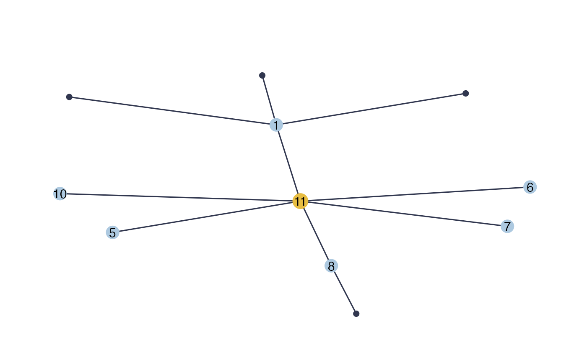

generate_missing_data.RdSimulate data and parameters including missing actors.
generate_missing_data(n, p, r = 1, type, plot = FALSE, dens = 2/p)
| n | number of samples |
|---|---|
| p | number of observed species |
| r | number of missing actors |
| type | type of conditional dependency structure (graph), either "erdos", "cluster", or "scale-free". |
| plot | should the simulated graph be plotted ? default to FALSE |
| dens | density parameter for cluster and erdos graphs. For erdos graphs, this corresponds to the edges probability of connectance |
Y: Observed count data
UH: Hidden latent Gaussian parameters
Sigma: Observed bloc of the variance-covariance matrix
Omega: Observed bloc of the precision matrix
G: The generated conditional dependency structure
TC: The true clique of neighbors of the missing actors (a list if r>1)
H: Indexes corresponding to missing actors in the original data
n=100 p=10 r=1 type="scale-free" data=generate_missing_data(n,p,r,type, plot=TRUE)#> List of 7 #> $ Y : int [1:100, 1:10] 8 14 2 6 9 7 2 13 9 16 ... #> $ UH : num [1:100] -1.32 -1.019 2.041 -0.243 -1.548 ... #> $ Sigma: num [1:10, 1:10] 0.822 -0.748 -0.748 -0.748 0.342 ... #> $ Omega: num [1:11, 1:11] 4.15 7.19e-01 -5.07e-16 -2.87e-16 4.10e-18 ... #> $ G : num [1:11, 1:11] 0 1 1 1 0 0 0 0 0 0 ... #> ..- attr(*, "dimnames")=List of 2 #> .. ..$ : NULL #> .. ..$ : NULL #> $ TC :List of 1 #> ..$ : int [1:6] 1 5 6 7 8 10 #> $ H : int 1